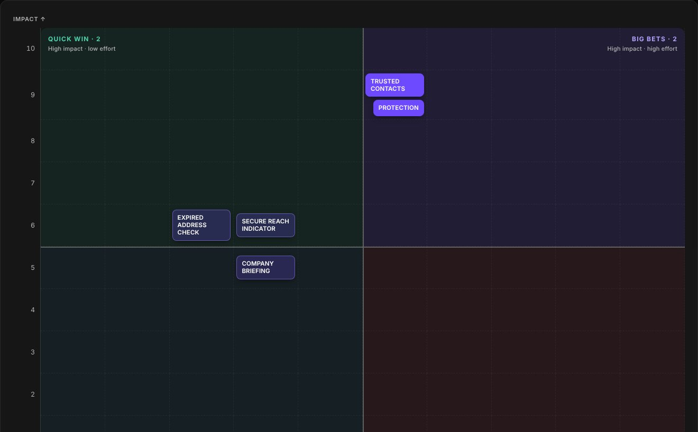
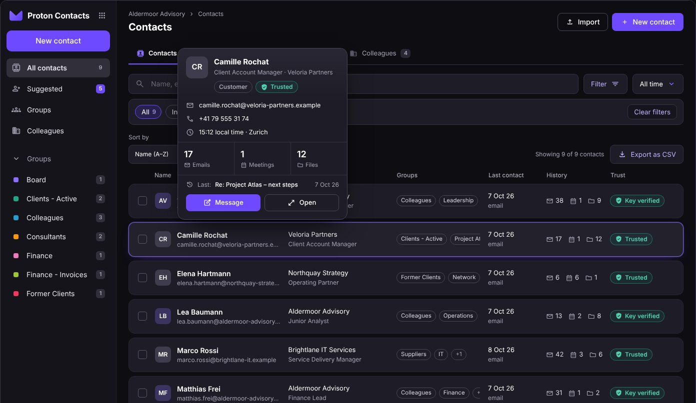
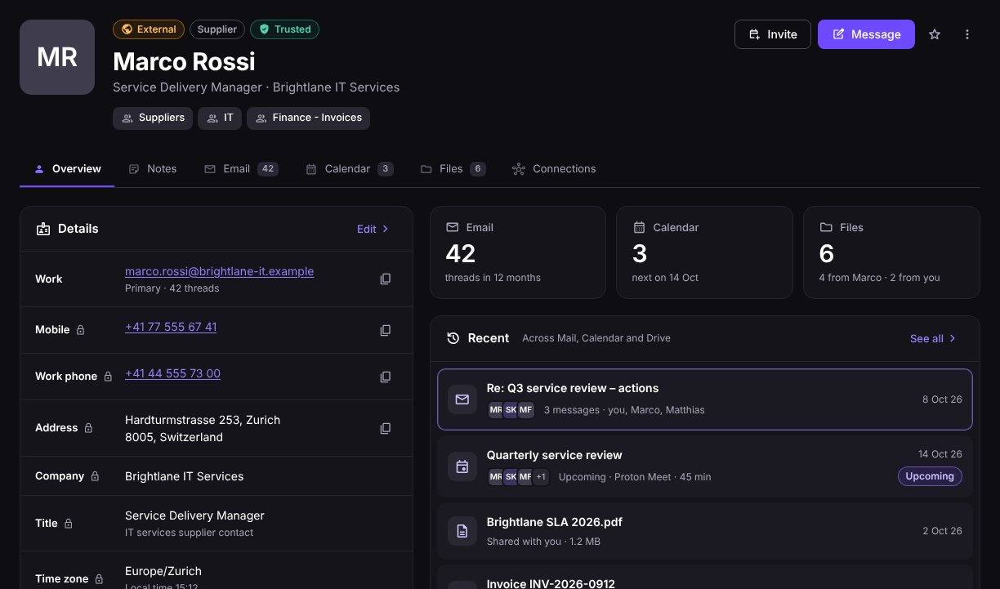
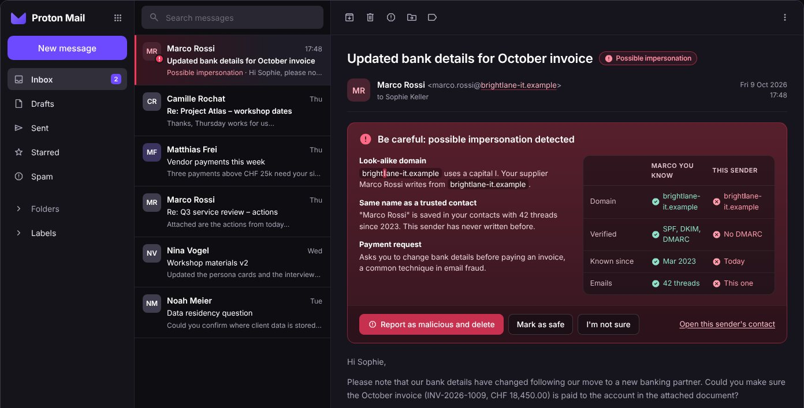
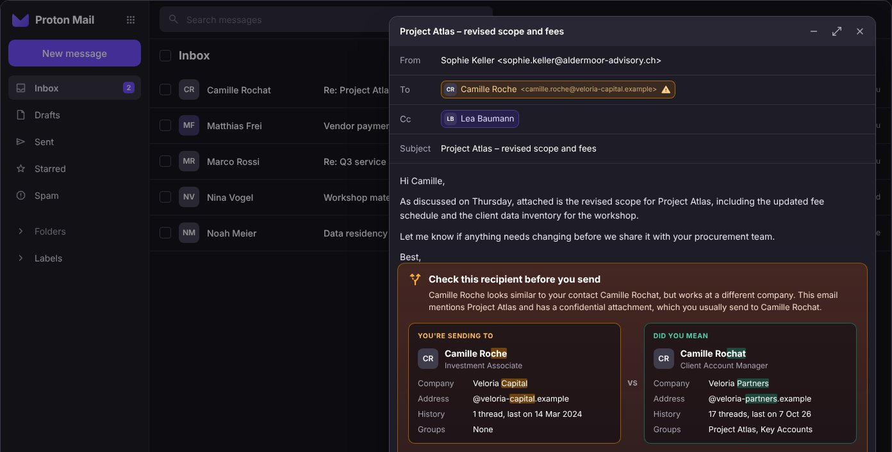

Take-home task workspace
How 27 feature ideas were prioritised, interactive mockups of the two MVP features, and the design system behind them.
01 / Start here
The prioritisation and the mockups
27 feature ideas scored 1–10 on impact and effort, with filters by priority, a brief for every feature and the full backlog.
Open the matrix
The two MVP features, Trusted Contacts and Protection, with a screenshot and a short explanation of every view.
Open the mockups02 / Mockups
Interactive, with fictional dataThe contacts list with hover summaries, suggested contacts, groups and colleagues.
Open
A contact opens full screen with your history, trust signals and connections.
Open
Inbound: a look-alike sender asks to change bank details.
Open
Outbound: an email about to go to the wrong Camille.
Open03 / Reference
The Proton Dark kit used inside the mockups: tokens, components and icons. The website itself uses DS Dark.